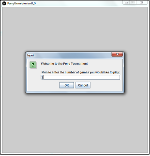
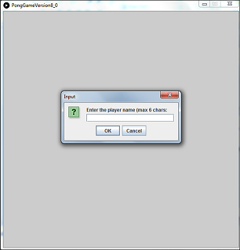
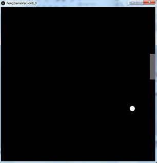
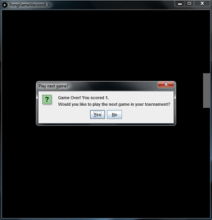
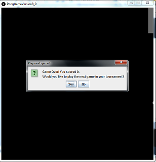
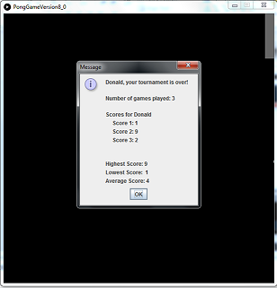
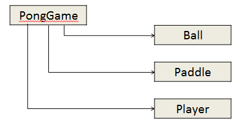
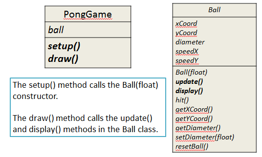

Objectives
On completion of this lab you should:
- be familiar with the game of pong.
- be able to write methods for a class and call those methods.
- be able to write getters and setters for each field.
- be able to write code to implement given validation rules in setters and constructors.
- start to understand how we protect the data in an object via class code.
In this lab, you will work on PongGameV1_0 and PongGameV2_0.
Remember our lab advice!
- Your labs are not a race to be the first student finished.
- It is very important that you:
- take your time.
- read the instructions carefully.
- ask your lecturer to explain concepts that you don't understand; that is what we are here for!
- attend ''ALL'' your classes; attendance will be taken.
- where code is given in labs, don't cut and paste it; maximise your learning by typing the code in.
The Game of Pong
- In this section, we wil introduce the Game of Pong that we will build over the next few labs.
Tournament
In our version of Pong, the player enters into a tournament of games.
The player decides how many games of Pong they would like to play in their tournament:

Player name
- The player enters their name (if more than 6 characters are entered, Pong will truncate the String):

Playing the Game
When the ball is hit by the paddle, the score is increased by 1.
When the paddle misses the ball, a life is lost.
There are three lives in a game.

When a game ends and there are more games left to play in the tournament:
The score is displayed.
The player is asked if they want to continue with the tournament.

If the player wishes to continue:
Their game score is stored in an array.
A new game is started (the variables storing the number of lives and score is reset to zero).
- Player is shown their score and asked again if they wish to continue.

If they choose yes:
Their score is stored in an array.
A new game is started.
Ending the Game
When a game ends and there are NO more games left to play in the tournament:
The player name and score is displayed for each game in the tournament.
The tournament statistics are also displayed (highest score, lowest score and average score).

Architecture of Pong
In the final version (V8.0) of Pong, there are four classes:
PongGame - has the setup() and draw() methods. It starts the game, handles player input, manages collision detection between the Ball and the Paddle, ends the game and outputs the player statistics.
Ball - controls the location, size and speed of the ball. This class updates the ball and displays it at the updated location.
Paddle - controls the location and size of the paddle. This class updates the paddle location and displays it at the updated location.
Player -stores the player name and the score for each game in the tournament (in an array). It calculates the statistics for the games in the tournament.

Versions of Pong
We will incrementally build versions of the game and finish with Game of Pong V8.0.
The 8 versions are:
Game of Pong V1.0 (Ball class)
Game of Pong V2.0 (Paddle class)
Game of Pong V3.0 (Simple collision detection)
Game of Pong V4.0 (Lives lost, lives per game, score)
Game of Pong V5.0 (Tournament functionality)
Game of Pong V6.0 (Player class – array, no statistics)
Game of Pong V7.0 (Player class – array, with statistics)
Game of Pong V8.0 (JOptionPane for I/O)
Game of Pong V9.0 (Advanced collision detection)
PongGameV1.0
Having read the lecture on PongGameV1.0 we will now develop it.
Make sure that you read and understand the code below, while typing it into the Ball class. If you have any questions on any part of the code, make sure to ask your lecturer.

Ball class
Create a new Processing sketchbook called ''PongGameV1_0''.
Create a new tab and call it ''Ball''.
In the Ball class, add the instance fields:
public class Ball
{
private float xCoord; //x coordinate of the ball
private float yCoord; //y coordinate of the ball
private float diameter; //diameter of the ball
private float speedX; //speed along the x-axis
private float speedY; //speed along the y-axis
}- Then add these getter methods:
public float getXCoord(){
return xCoord;
}
public float getYCoord(){
return yCoord;
}
public float getDiameter(){
return diameter;
}- Followed by the setDiameter setter:
public void setDiameter(float diameter){
//The ball diameter must be between 20 and height/6 (inclusive)
if ((diameter >= 20) && (diameter <= height/6)){
this.diameter = diameter;
}
else {
// If an invalid diameter is passed as a parameter, a default of 20 is imposed.
// With this animation, if we do not supply a default value for the diameter,
// a ball may not be drawn on the display window. Important note: it is not
// always appropriate to provide a default value at sette) level; this will
//depend on your design.
this.diameter = 20;
}
}- Now add this method that will display a white ball with no outline on the display window:
public void display(){
fill(255);
noStroke();
ellipse(xCoord, yCoord, diameter, diameter);
}- Now add the resetBall private helper method:
private void resetBall(){
xCoord = 0;
yCoord = random(height);
speedX = random(3, 5);
speedY = random(-2, 2);
}NOTE: A private helper method is a method that is private to the class you are in i.e. you are not allowed to use it outside of the current class. The resetBall method is used by the Ball constructor and the update method.
Still in the ball class, add this constructor:
public Ball(float diameter){
setDiameter(diameter);
resetBall();
}- Add a hit method that will change the ball direction when it hits the paddle and bump it back to the edge of the paddle. :
public void hit(){
speedX = speedX * -1;
xCoord = xCoord + speedX;
}- Finally add the following update method:
public boolean update(){
boolean lifeLost = false;
//update ball coordinates
xCoord = xCoord + speedX;
yCoord = yCoord + speedY;
//reset position if ball leaves the screen
if (xCoord > width + diameter/2){
resetBall();
lifeLost = true;
}
// If ball hits the left edge of the display
// window, change direction of xCoord
if (xCoord < diameter/2)
xCoord = diameter/2;
speedX = speedX * -1;
}
// If ball hits top or bottom of the display
// window, change direction of yCoord
if (yCoord > height - diameter/2){
yCoord = height - diameter/2;
speedY = speedY * -1;
}
else if (yCoord < diameter/2){
yCoord = diameter/2;
speedY = speedY * -1;
}
return lifeLost;
}- Your ball class is complete. Save this code.
PongGameV1_0 class
Now that Ball is written, we will start to use it in the PongGameV1_0 class.
Return to this class and enter the following code:
Ball ball;
void setup(){
size(600,600);
noCursor();
//setting up the ball with hard-coded sizes.
ball = new Ball(20.0);
}
void draw(){
background(0);
//Update the ball position and display it.
ball.update();
ball.display();
}Test your code
Run your code.
You should now have a ball that traverses the screen left to right.
When the ball reaches the right hand side, it should disappear off screen and a new ball should appear in a random lcoation on the left hand side.
When a new ball appears, it should traverse the screen in a random trajectory at a random speed.
Make sure you understand the code before moving onto PongGameV2_0.
Solution
- If your code is not working, the solution can be found here.
PongGameV2.0
Having read the lecture on PongGameV2.0 we will now develop it.
Make sure that you read and understand the code below, while typing it into the Paddle class. If you have any questions on any part of the code, make sure to ask your lecturer.

Paddle class
Open your solution to ''PongGameV1_0''.
Save it as ''PongGameV2_0''
Create a new tab and call it ''Paddle''.
In the Paddle class, add the instance fields:
public class Paddle
{
private int xCoord; // X coordinate of the paddle
private int yCoord; // Y coordinate of the paddle
private int paddleWidth; // width of the paddle
private int paddleHeight; // height of the paddle
}- Then add these getter methods:
public int getXCoord(){
return xCoord;
}
public int getYCoord(){
return yCoord;
}
public int getPaddleWidth(){
return paddleWidth;
}
public int getPaddleHeight(){
return paddleHeight;
}- Followed by the setPaddleWidth setter:
public void setPaddleWidth(int paddleWidth){
//The paddle width must be between 10 and
//width/2 (inclusive)
if ((paddleWidth >= 20) && (paddleWidth <= width/2)){
this.paddleWidth = paddleWidth;
}
else{
// If an invalid width is passed as a parameter, a default
// width of 20 is imposed. With this animation, if we do
// not supply a default value for the width, a paddle
//may not be drawn on the display window. Important
// note: it is not always appropriate to provide a default
// value at setter level; this will depend on your
//design.
this.paddleWidth = 20;
}
}- Followed by the setPaddleHeight setter:
public void setPaddleHeight(int paddleHeight){
//The paddle height must be between 50
//and height/2 (inclusive)
if ((paddleHeight >= 50) && (paddleHeight <= height/2)){
this.paddleHeight = paddleHeight;
}
else{
// If an invalid height is passed as a parameter, a default
// height of 50 is imposed. With this animation, if we do
// not supply a default value for the height, a paddle
// may not be drawn on the display window. Important
// note: it is not always appropriate to provide a default
// value at setter level; this will depend on your design.
this.paddleHeight = 50;
}
}- Now add this constructor:
public Paddle(int paddleWidth, int paddleHeight)
{
setPaddleWidth(paddleWidth);
setPaddleHeight(paddleHeight);
// the xCoordinate variable is set here and it stays
// this value for duration of the program.
xCoord = width - this.paddleWidth;
// the yCoordinate variable is set here and changes
// later in the program as the mouse moves on the
// vertical plane.
yCoord = height/2;
}- Add this method that will display a gray paddle with no outline on the display window:
public void display(){
fill(102);
noStroke();
rect(xCoord, yCoord, paddleWidth, paddleHeight);
}- Finally add the following update method:
public void update()
{
yCoord = mouseY - paddleHeight/2;
//Reset yCoord if it’s outside the window coordinates.
if (yCoord < 0){
yCoord = 0;
}
if (yCoord > (height - paddleHeight)){
yCoord = height - paddleHeight;
}
}- Your Paddle class is complete. Save this code.
PongGameV2_0 class
The code from your PongGameV1_0 class should be in your PongGameV2_0 class.
The following methods perform this processing:
- setup() sets up the size of the window, switches off the cursor and creates a new Ball object
- draw() repeatedly updates the ball location on the screen (based on speedX and speedY) and redisplays it.
Update this code so that a Paddle object is created in the setup() method. To the Paddle constructor, pass in 20 as the width and 100 as the height.
Test your code
Run your code.
The ball functionality should not have been affected. It still should:
traverse the screen left to right.
when it reaches the right hand side, disappear off screen and a new ball should appear in a random lcoation on the left hand side.
when re-appearing, traverse the screen in a random trajectory at a random speed.
A paddle should also now appear. It should be pinned to the right hand side of the window and should move on it's vertical plane in accordance with the movement of the mouse pointer.
As there is no collision detection built into the code, the paddle and ball ignore each other.
Make sure you understand the code before moving onto PongGameV3_0.
Solution
- If your code is not working, the solution can be found here.